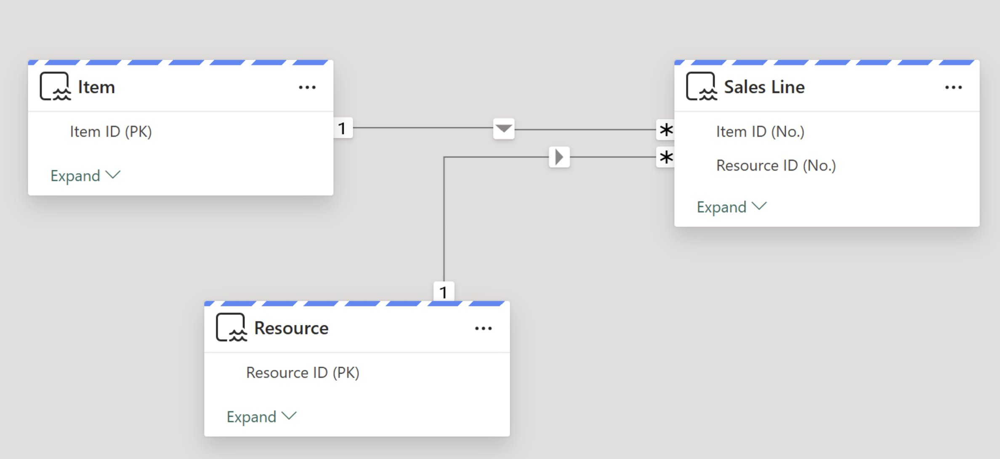

Resources
BC Model Accelerator
Auto-generated SQL views with surrogate keys for every BC table relationship. Multi-company by default.
Business Central Model Accelerator
BC2Fab mirrors your BC data reliably to Fabric — but raw BC data isn't analytics-ready yet. The Model Accelerator auto-generates SQL views with surrogate keys for every BC table relationship. Multi-company by default.
BC's Data Model Wasn't Designed for Analytics
Common challenges when building reports directly on mirrored BC data.
Composite Primary Keys
Highly relevant BC tables like Sales Line use compound keys. In multi-company models every relationship is composite.
Conditional Foreign Keys
Fields like No. on Sales Line point to Item, Resource, or G/L Account depending on Type — no single join path.
Manual Modeling Overhead
Many projects start with writing CONCAT or Power Query concatenations for dozens of key and FK fields.
AI Agents Can't Navigate
Copilots and agents need explicit, joinable ID columns with consistent naming to traverse tables autonomously.
The Next Step — Business Central Model Accelerator
Auto-generated SQL views with surrogate keys for every BC table relationship. Multi-company by default.
Closing the gap from raw mirrored data to analytics-ready models.
Three-Step Pipeline
How the Model Accelerator transforms raw mirrored data into an analytics-ready silver layer.
Sales Line → Item & Resource
One example of many: Sales Line gets Item ID (No.) and Resource ID (No.) based on Line Type. IDs include the company prefix (e.g. CRONUS|) for multi-company support. Same pattern for G/L Accounts, Fixed Assets, etc.

Power BI model view — Item ID (PK) → Item ID (No.) and Resource ID (PK) → Resource ID (No.) as single-column relationships, Direct Lake compatible.
Agents Can Navigate the Data Autonomously
Consistent ID column naming across all views lets an agent scan for columns containing Customer ID to find every referencing table.
Clear BC names preserved (e.g. Discount %, not Discount_Pct). Consistent ID columns make autonomous discovery trivial.
An Analytics-Optimized Silver Layer
What the Model Accelerator delivers for your Power BI reports and AI agents.
Power BI Ready
Single-column surrogate IDs for all table relationships. Direct Lake compatible. No DAX workarounds.
AI & Agent Ready
Consistent ID naming lets agents discover and traverse table relationships — including custom tables.
Zero Maintenance
Views automatically adjust when schemas in BC change. No manual intervention required.